Cykl szkoleń dla rolników i członków stowarzyszeń
Opublikowano: 2 grudnia | Autor: Zarząd Stowarzyszenia

W dniach 19.11.2025 – 23.11.2025 – 26.11.2025 – 27.11.2025 w budynku Domu Kultury we Wrzawach odbył się cykl szkoleń dla rolników i członków stowarzyszeń działających na terenie Gminy Gorzyce Szkolenia organizowane przez Stowarzyszenie Producentów Fasoli Tycznej „Piękny Jaś” we Wrzawach w ramach projektu „ Wrzawska Partycypacja” . Zgodnie z umową 820/1/MMS/2025 planowany jest zakup i montaż stacji pogodowej. Projekt finansowany jest ze środków Narodowego Instytutu Wolności – Centrum Rozwoju Społeczeństwa Obywatelskiego. W ramach Rządowego Programu Wsparcia Organizacji Pozarządowych Moc Małych Społeczności
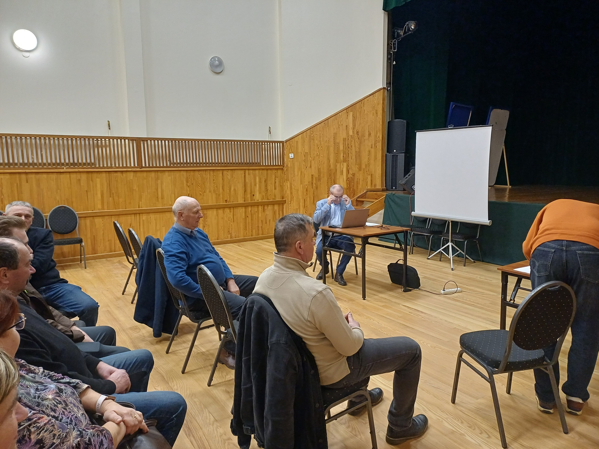
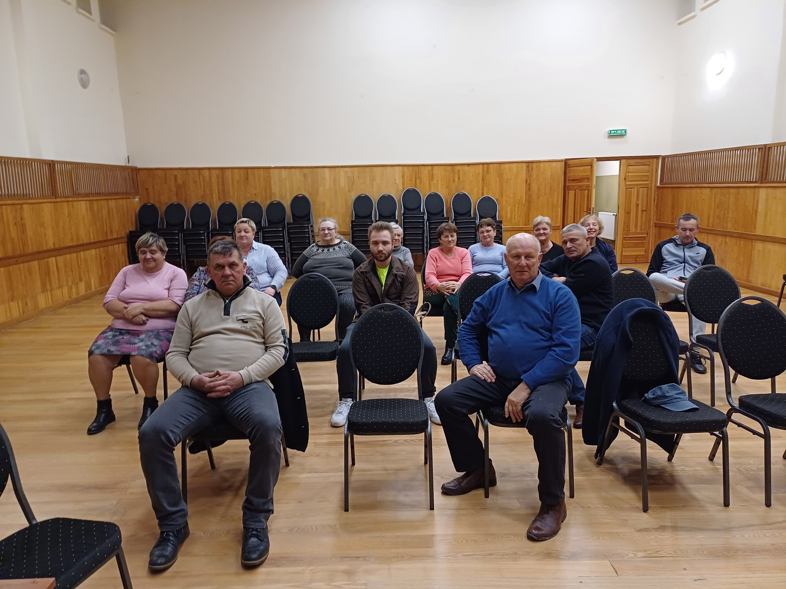
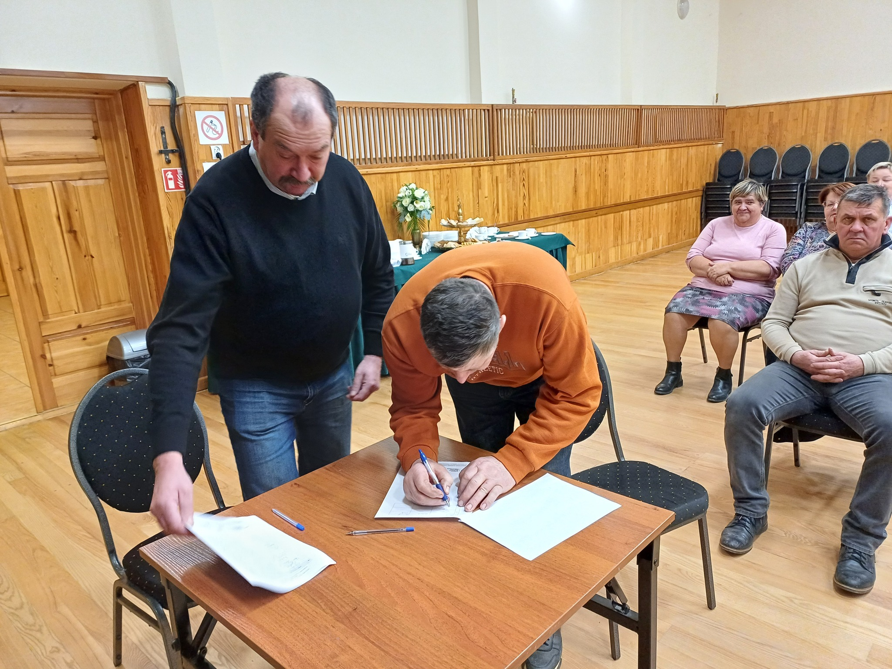
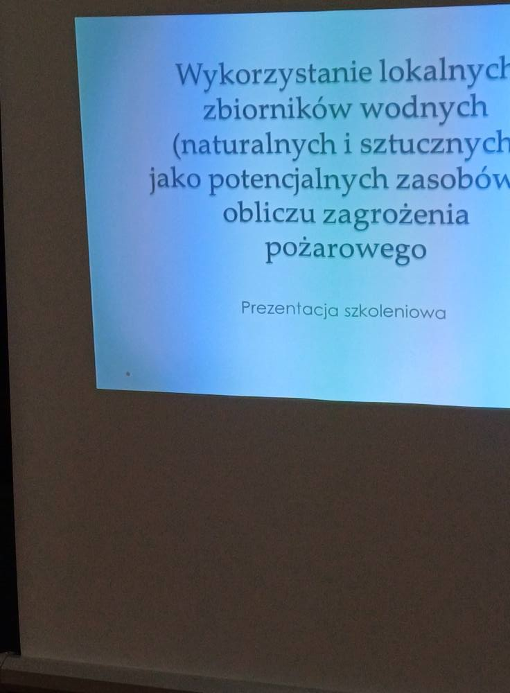
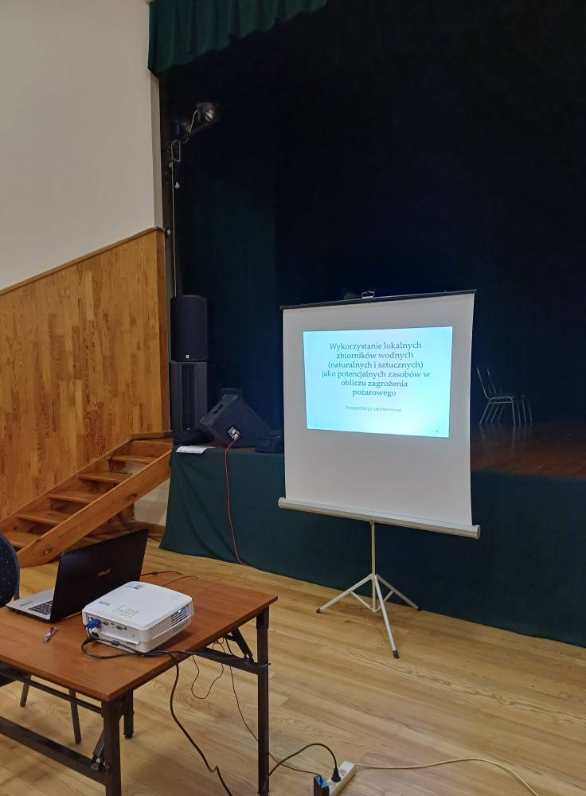
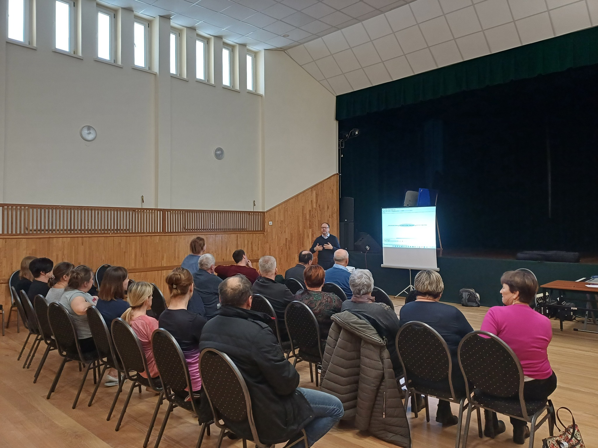
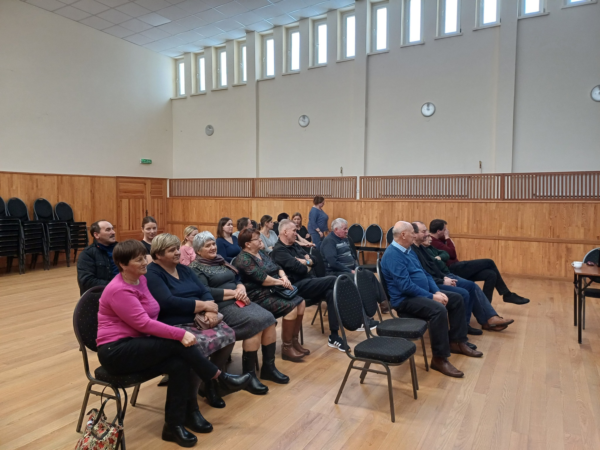
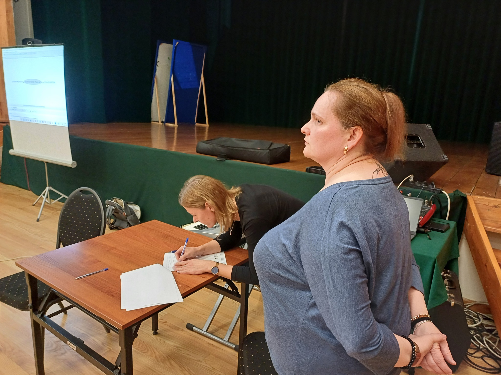
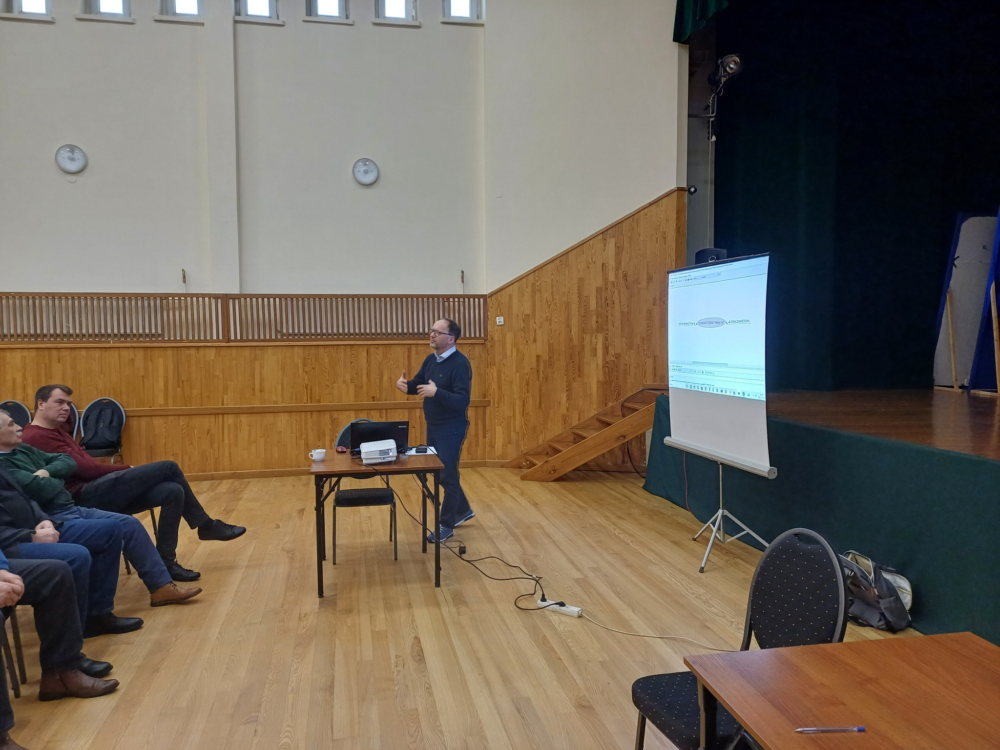
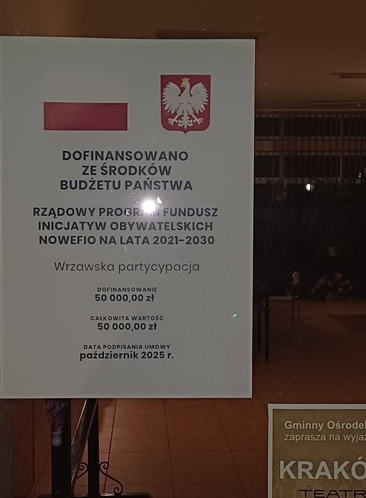
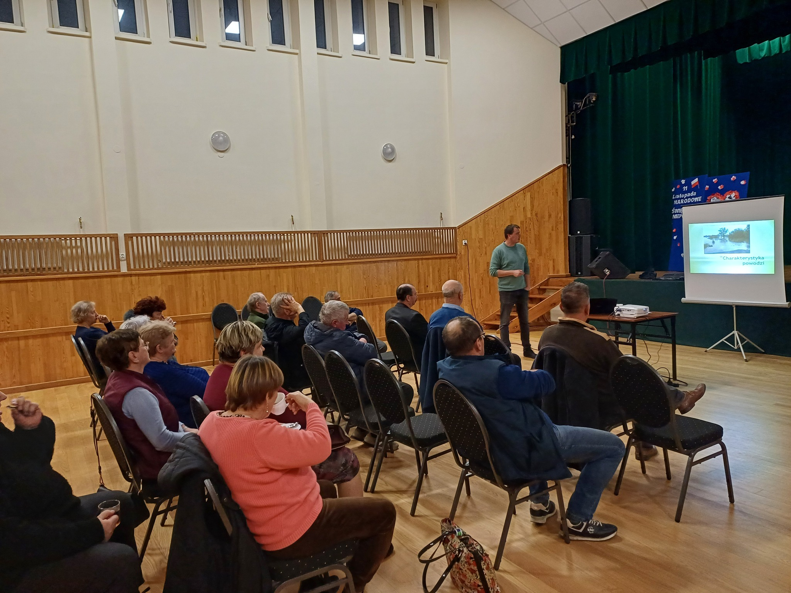
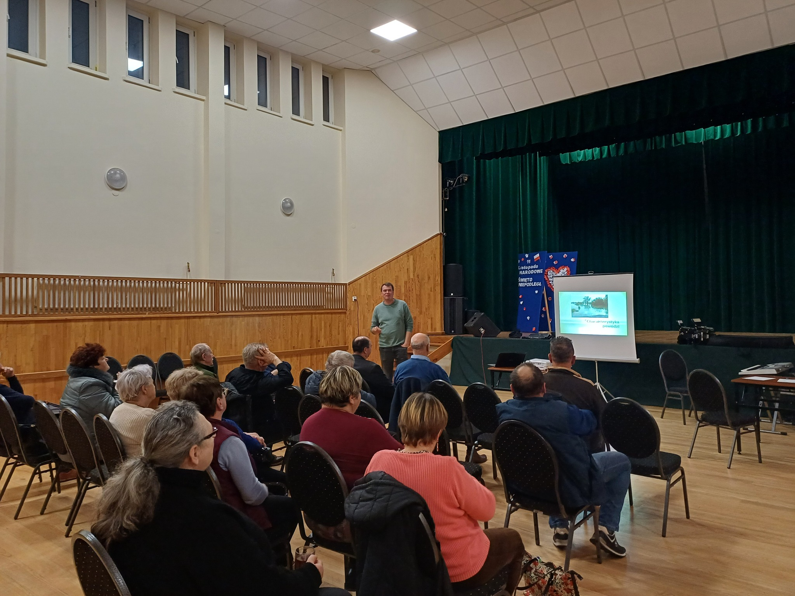
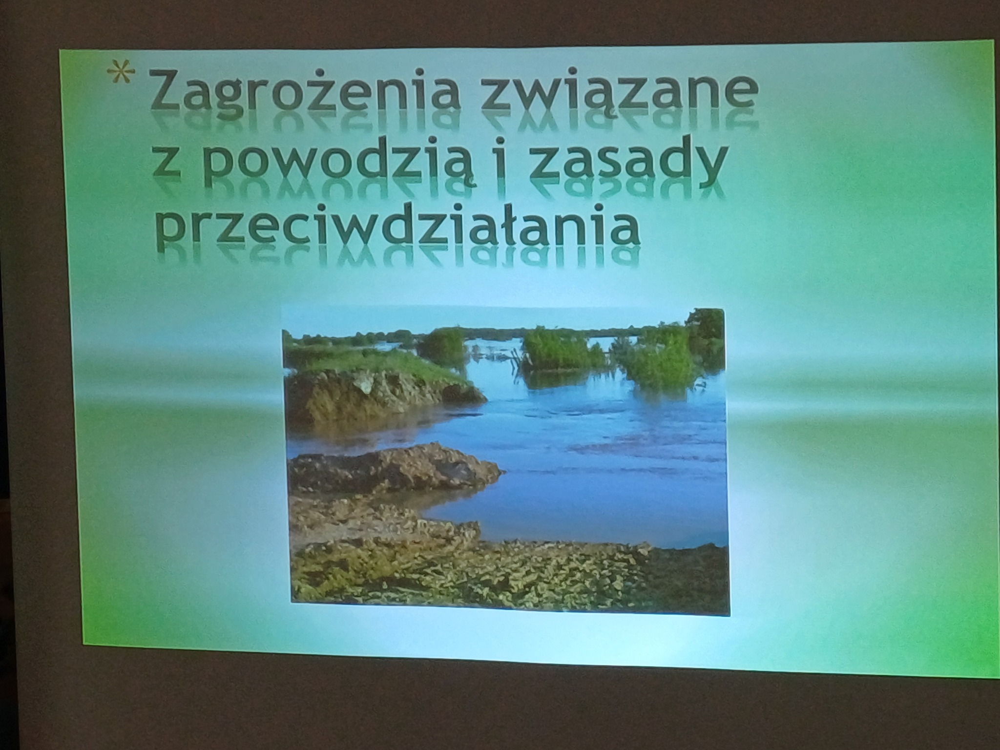
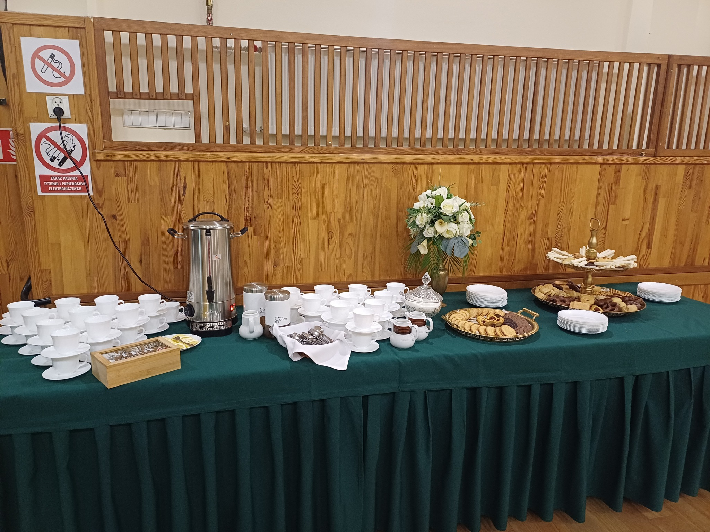